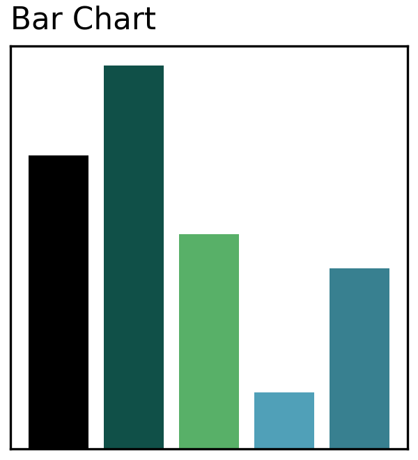
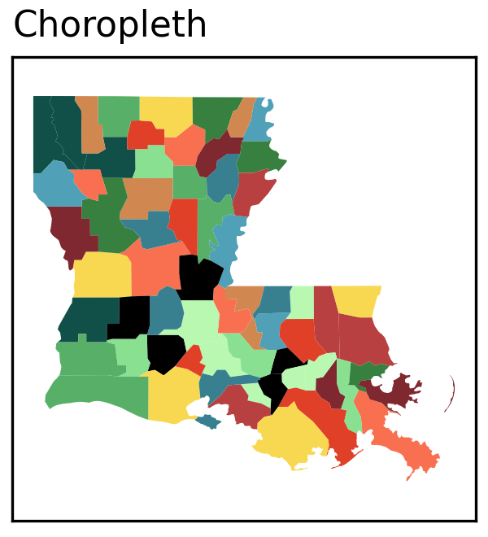
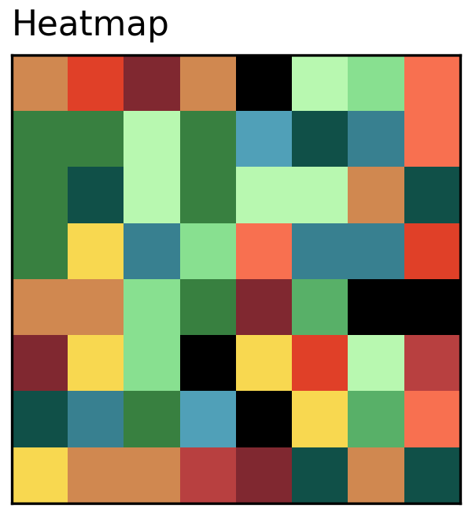
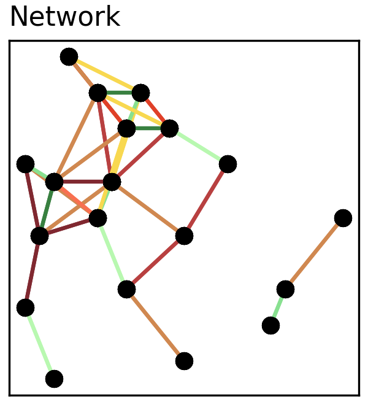
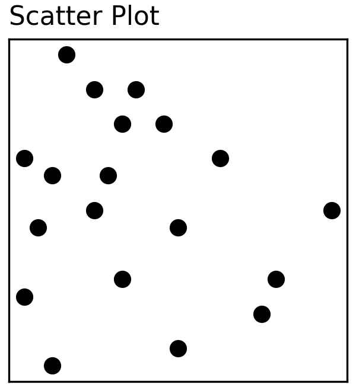
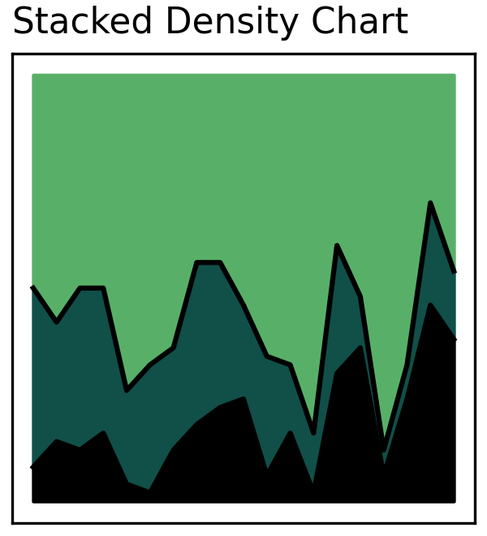
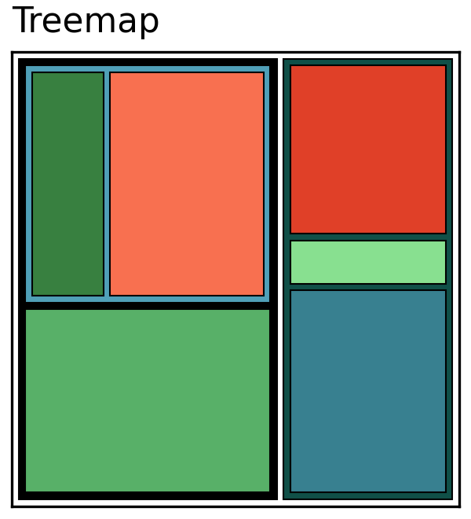
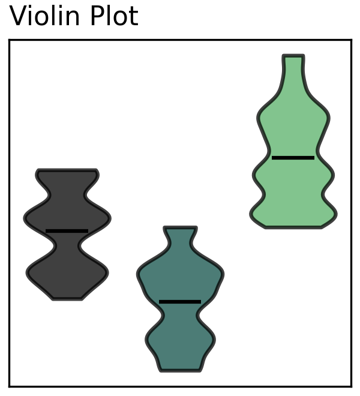

Directory
Projects
- Address Ado: Big Data, Pattern Discovery, Human Geology
- Consumer Reports: Injuries, Bump Charts, Longitudinal Trends
- Cooking Network: Ingredients, Force-Directed Networks, Communities
- Letter Games: Language, Game Design, Strings
- Reef Fish: Ecology, Interactive Treemaps, Stacked Density
- Statistical Arbitrage: Economics, Time Series, Cointegration
Visualizations
 Bar charts are used for comparing values of categorical data.
 Choropleths are used for color-coded geospatial representations.
 Heatmaps show relationships between two variables with a third variable presented as color or shade.
 Line charts are used for tracking series data, often across time or index.
Line charts are used for tracking series data, often across time or index.
 Networks show relationships between paired points or coordinates.
 Scatter plots are used for relating two numerical variables.
 Stacked density plots show proportions as they change across another series.
 Treemaps show proportions of a whole (better than a pie chart) and allow nesting.
 Violin plots are used for comparing distributions - similar to boxplots but provide more information about the shape of data.